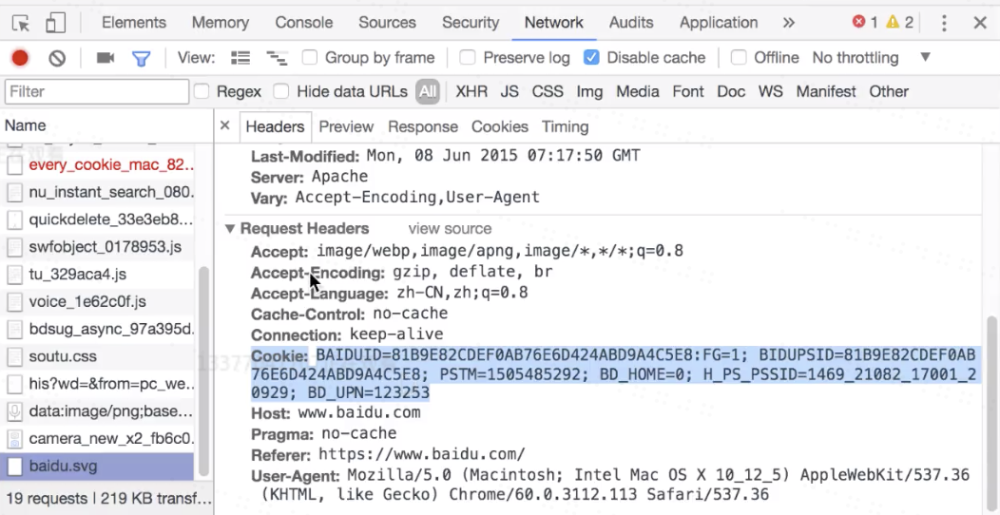

About LocalStorage,Cookie And Session
关于LocalStorage,Cookie和Session
Cookie
网页的application下的Storage里的Cookie里可以看到Cookie的信息。网站只要设计登陆功能就一定会用到Cookie。
Cookie可以把一些需要存储的信息存储在当前的页面下。

包括Name和Value等。Domain表示在哪个域下是生效的。Path表示是否有下级的Path。Expries表示生效时间。设置Cookie时会设置生效时间，过了该时间之后则会失效。
当输入URL时，服务器会发送响应头，里面包含Set-Cookie，便可以设定Cookie。

当Cookie被保存在浏览器之后，再次刷新网页时，因为Cookie已经存在，所以响应头上就不会再带有同样的Set-Cookie了。
当浏览器被种下Cookie时，之后浏览器向该域名发送请求，比如请求图片等时，请求头都会带上Cookie。
关于Cookie，综上：

Session
当一个用户打开淘宝登陆后，刷新浏览器仍然显示登陆状态。服务器如何分辨这次发起请求的用户是刚才登陆过的用户呢。
用户没有登陆时，在地址栏输入URL向服务器发送请求时，服务器看到该URL发送的请求头并没有带上Cookie，便可以知道用户没有登陆，于是便在自己服务器里创建了一个对象（一串数据），这个对象里有一个随机id，这个对象就是session。在服务器向浏览器发送响应头的时候，加上了Set-Cookie，把id给set上，当用户再次打开该网站的时候，就有了这个Cookie。
当用户再次刷新页面的时候，请求头带上了这个Coolie，服务器通过接收到的id和当时存在的对象进行对比，得出是该用户再次访问了该页面。
可以认为session是结合Cookie实行的一种机制，用于识别用户的身份。
session对象可以存在服务器内存中，也可以保存在数据库中。

LocalStorage
localStorage就是一个存数据的地方，将数据存到浏览器里。
特点是存储数据量大，并且不会失效。

LocalStorage对应一个key和value，可以存储很多的内容，并且没有过期的时效。